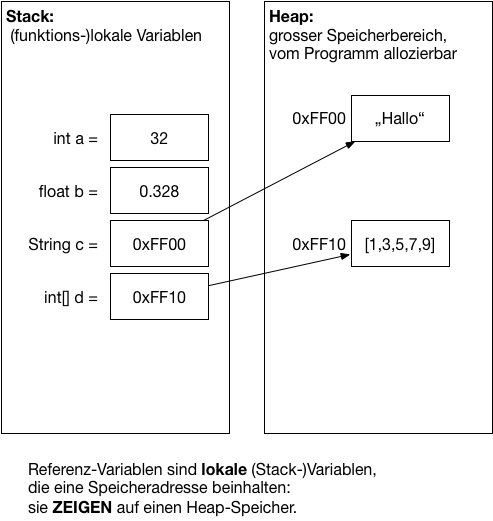

{% extends "../_base_template.html" %}
{% block title %}Lektion 1 - Einführung ins Thema{% endblock %}

{% block sections %}
<section data-markdown >
<textarea data-template>
<i class="fas fa-graduation-cap"></i> Repetition Referenzen in Java
=============================

**Zur Erinnerung:**

* Was sind Referenzen in Java?
* Was sind Pointer in C?
* Wie unterscheiden sich die beiden Konzepte?



</textarea>
</section>

<section>
<section data-markdown >
<textarea data-template>
<i class="fas fa-graduation-cap"></i> Repetition Referenzen in Java
=============================

Java-Referenzen sind das Pendant zu C-Pointer: Sie zeigen auf einen Speicherbereich, wo das eingentliche Datenobjekt "sitzt".

Referenzen in Java werden immer dann verwendet, wenn ein Objekt mit **`new`** erzeugt wird:

```java
// Die Variable 'a' ist eine Referenzvariable: Sie referenziert ein Objekt vom Typ String:
String a = new String("Hallo");
```

Der **Inhalt** der Variable `a` ist somit __kein__ String-Objekt, sonder nur die __Referenz__ auf ein String-Objekt!
Dieses Konzept ist ähnlich wie C-Pointer.

Ebenso werden bei Aufruf einer Funktion die Referenzen, NICHT das Objekt übergeben:


```java
// Die Funktion nimmt eine Referenz vom Typ String entgegen:
public void print(String str) {
    System.out.println(str);
}

String a = new String("Hallo");
print(a); // Es wird die Referenz auf das String-Objekt übergeben
```

Ebenso bei der Zuweisung von Variablen:

```java
String a = new String("Hallo");

// Der Variablen b wird nur die Referenz von a zugewiesen!
String b = a;
```
</textarea>
</section>

<section data-markdown >
<textarea data-template>
<i class="fas fa-graduation-cap"></i> Repetition Referenzen in Java
=============================

Genau gleich verhält es sich mit Arrays:

```java
// Neuer Array wird im Heap erzeugt, und die Referenz darauf im Stack in der Variablen  a gespeichert:
int[] a = {1,2,3,4,5};

// Der Variablen b wird dieselbe Referenz wie a zugewiesen: Der Wert von a ist eine Referenz:
int[] b = a;

// somit verändern wir dasselbe Objekt, da b dieselbe Referenz enthält:
b[3] = 42;
System.out.println(a[3]); // 42
```

**Anders** ist es bei einfachen (primitiven) Datentypen:

```java
int a = 5;

int b = a; // Der Wert von a ist keine Referenz, sondern die Zahl 5.

b = 42; //
System.out.println(a); // 5
```

Der Wert von einfachen Datentypen sind nicht Referenzen, sondern ganz einfach der Wert.
Die **einzigen** einfache Datentypen in Java sind Zahlen-Datentypen. **Alles andere sind Referenz-Typen**.

</textarea>
</section>
</section>

<section data-markdown >
<textarea data-template>
<i class="fas fa-graduation-cap"></i> Repetition Referenzen in Java
=============================

Lösen Sie die Aufgaben zu Referenzen auf Moodle.

</textarea>
</section>

{% endblock %}
